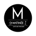

Minimum dve godine aktivnog radnog iskustva na razvoju .NET aplikacija
Formalno obrazovanje (fakultetska diploma) iz softverskog inženjerstva ili srodnih
oblasti
Znanje i radno iskustvo sa:
C#, ASP.NET MVC , jQuery, Bootstrap
SQL programiranje i razvoj relacionih baza podataka (Microsoft SQL Server
2008+)
Spremnost i sposobnost učenja novih tehnologija i poslovnih područja
Visok stepen odgovornosti i orijentisanosti na učinak u poslu
Znanje engleskog jezika
Medicina
Medicinska sestra-tehničar
Radi na pružanju medicinskih usluga korisnicima doma(davanje lekova, injekcija i drugih
terapija, meri pritisak, temperaturu, previja korisnike, i sl.), koje je prepisao
lekar.
Vodi dnevni pregled pruženih medicinskih usluga i obilazi korisnike.
Svakodnevno kontroliše kvalitet i ispravnost opreme koju koristi.
Vodi brigu o higijeni i urednosti radnog prostora u pogledu ispunjavanja
zdravstveno-sanitarnih uslova, kao i propisa i mera bezbednosti i zdravlja na radu.
Diplomirani farmaceut i farmaceutski tehničar
Zahtevi: Potreban farmaceut sa licencom kao i farmaceutski tehničar sa
radnim iskustvom za rad u apoteci.
Uslovi rada: Promena smena na nedeljnom nivou
Dužnosti: Rad sa pacijentima, prijem robe.
Ugostiteljstvo

Konobar
III/IV stepen stručne spreme
Znanje engleskog jezika
Obavezno radno iskustvo rada u restoranu
Poznavanje hrane i pića, razvijene prodajne veštine
Poznavanje restoranskog poslovanja
Kuriri za dostavu hrane sopstvenim vozilom
Minimum SSS
Aktivan vozač, važeća vozačka dozvola ( B kategorija )
Dobro poznavanje ulica u Beogradu
Odgovornost i pouzdanost
Bez istorije ozbiljnijih saobraćajnih prekršaja
Komunikativan, pozitivan i prijatan u kontaktu sa klijentima
Pizza majstor
Priprema pizza u pica peći na drva
Prijave slati na email ili pozvati na telefon br. 2, od 09-17h.
Vredan, pouzdan i odgovoran.
Redovna primanja i rad u prijatnom okruženju.
Radno iskustvo u pripremi pizza na šamotu.
Strucna sprema: SSS
Ekonomija
Računovođa
Školska sprema: VI ili VII stepen stručne spreme – ekonomski smer
Radno iskustvo: minimum 3 (tri) godina radnog iskustva
Poznavanje rada na računaru
Poznavanje engleskog jezika
Menadžer finansija i računovodstva
VSS ekonomskog usmerenja
iskustvo u samostalnom vođenju računovodstva u spoljnotrgovinskoj delatnosti, dok je
poznavanje maloprodaje prednost
samostalnost u pripremi svih izveštaja za državne institucije i interne potrebe
iskustvo u samostalnoj izradi završnih računa
iskustvo u saradnji sa revizijom i finansijskim institucijama
odlično znanje rada u MS Office-u, naročito u Excel-u
odlično poznavnaje engleskog jezika
dobre veštine komunikacije, preciznost i saradljivost
poštovanje rokova, samostalnost i posvećenost u radu
sposobnost organizacije rada i vođenje tima
Pripravnik u finansijama
Učenje o kompaniji i drugim sektorima u Atlantic Grupi
Obuka na poslu, asistiranje timu u operativnim zadacima i odgovornostima u oblasti finansijskog izveštavanja (eksterno i interno)
Rad na projektu uz podršku mentora
Učestvovanje u edukacijama i drugim razvojnim aktivnostima u sklopu programa Atlantic Graduate Trainee
Ekonomski fakultet
Student 5. godine ili završene godine studija sa maksimalno 1 godinom iskustva

 Medicinska sestra-tehničar
Medicinska sestra-tehničar Kuriri za dostavu hrane sopstvenim vozilom
Kuriri za dostavu hrane sopstvenim vozilom